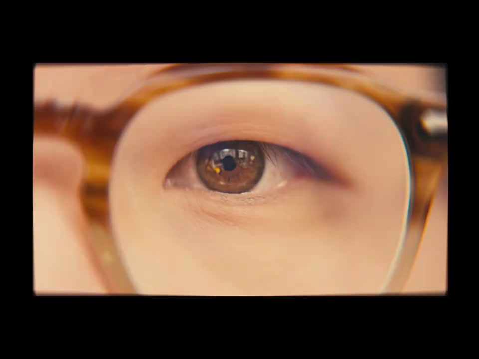
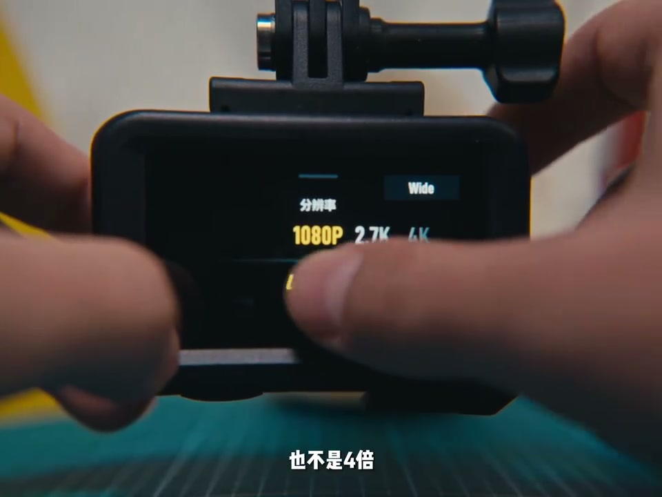
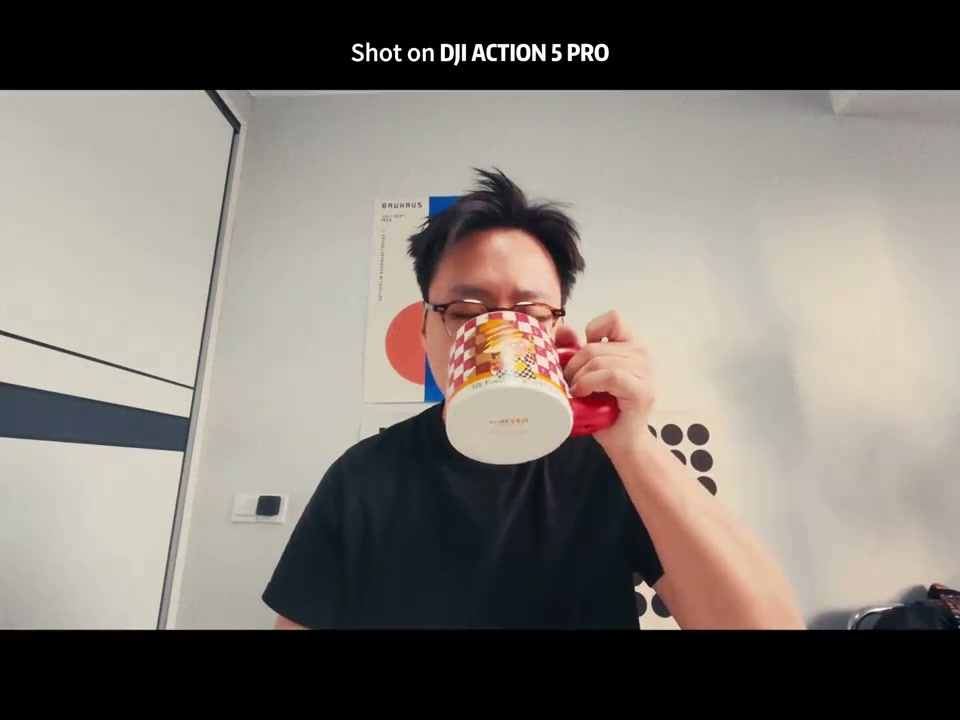

内容要点
这段视频围绕「DJI AC5 运动相机也能拍电影感vlog？ 你看看」展开，按时间介绍其中的关键环节。我回头看看过去的这一年 我带着他还真去了很多地方。
拍摄与画面处理
我回头看看过去的这一年 我带着他还真去了很多地方。日本的最高峰 大高枷锁的山脉。And fishing on the Black Sea。基本上这个小东西帮助我记录了很多生活中的美好瞬间啊。于是呢 我又入手了他的升级版本全新的The One and Only DJI Action 5 Pro。今天我就来给大家分享下如何用 DJI Action 5拍摄Vlog 以及拥有更好的电影感。作为一个运动相机说了防水防水 咔咔扛噪以外 action fire 还有另外一个特点那就是小。既于这个特点我们可以把相机不是在有很多有创意的地方带来更有感官刺激的视觉冲击。因为我之前也带着Action去过很多特别冷的地方滑雪。他的遇寒能力是非常出众的

拍摄与画面处理
不惹到他抵抗高温的能力到底如何。那有了这些想法在脑袋里 我们今天大概要拍摄的就是Kafuka 早期准备早餐的一个小故事。那先来一个经典的冰箱视觉 这个人人都会的拍摄技巧 it is boring。那怎么样才能拍得与众不同呢 毕竟就是双面胶。只要用双面胶把action固定在想要拍摄的物体上面。我们就可以获得更加真实并且是动态的物体视觉喽。The same method we could also apply to the coffee part。然后我们把action调整到慢动作模式slow motion。那不是两倍 也不是四倍
核心操作步骤
It is 5倍速慢放。Let's go。单相机是不可以直接放进锅里的所以我们做一个简易的道具。又是一个平常的早上醒来的一件事 我觉得先给自己整点吃的吧。给大家讲一下我的故事吧 最近我经历的太多事情了。先是离职领了大礼包 然后自己注册了个小公司。搞自媒体粉丝突破了一万 然后顺手签了EMCN。最后脚踝受大伤 然后在家躺了至少半个月不止。2024年对我来说到目前为止真的很难评价

开场与主题引入
每个人可能都会经历很多个第一次吧 有好的也有不好的 难忘。但是同时又很宝贵 他意味着在这个过程当中我们是有些成长的。可能看到这里有人会说 你真的好厉害 什么都会 自媒体做的也挺好。但是其实一开始我也傻了故事 只是我知道一个道理。那就是可能卖出第一步是最重要的 像做出一坨像狗屎一样的东西。然后再慢慢的把它变好 很幸运的是我做到了。但我相信换做其他人应该也是可以的。可能我最大的感受就是不管发生什么事情都要坚持下去。坚持每天吃早餐 坚持每天运动 坚持每天学习个新的技能。坚持让自己变得更好

每个人可能都会经历很多个第一次吧 有好的也有不好的 难忘。